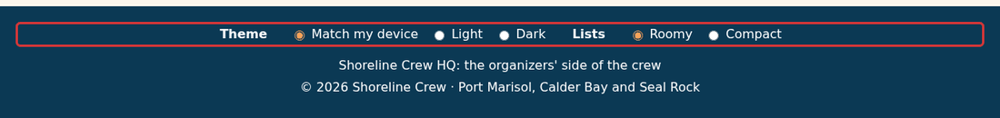

React + TypeScript · Part 3 · Session 19 of 26 · 3 hours
Session 19
Mutations and Client State
Change the API's data, then give the browser's own state a small home.
Today
Three hours, at a glance
| 0:00 | Warm-up: from reading to changing |
| 0:10 | 7.2 Mutations: change forms, invalidation, refusals |
| 0:40 | 7.2 Wait, or show it now? |
| 0:55 | Lab 7.2: the volunteer's side |
| 1:15 | Break (10 min) |
| 1:25 | Project: An HQ That Saves, Steps 1 and 2 |
| 1:40 | 7.3 Client State: where state lives, a typed store |
| 2:10 | Lab 7.3: pinned sites |
| 2:25 | Project: Display Choices That Stick, Steps 1 to 3 |
| 2:50 | Exit ticket, homework, bring list |
LABS Lab files are in
labs/module-19. Work in starter/, never the solution.Warm-up · 10 minutes
From reading to changing
- You pressed Publish: what did the HQ say, what did the API get?
- The key of Maya's "pelican" search, and its short prefix
- Three pieces of state in the HQ that are not server state
7.2
Mutations
Send the change, then cross out what it affects.
7.2 · Mental model
Query or mutation?
- Query: reads
- Runs when a component needs it
- Cached under a key
- Retried by default
- Mutation: changes
- Runs when you call it
- Not cached
- Not retried (a POST twice = two cleanups)
WHY What a mutation leaves behind is a cache that is out of date.
7.2 · Mental model
The harbor office's change forms
- Head office (the API) accepts a form, or sends it back with notes
- Accepted: cross out every logbook entry it affects
- Small everyday forms: pencil it in now, rub it out on a no
- Three ideas: mutations, invalidation, optimistic updates
7.2 · Live demo
A mutation factory
shoreline-hq/src/api/mutations.ts
/** Plan a cleanup. Waits for the API: the new cleanup's id comes from it. */ export function createEventMutation() { return mutationOptions({ mutationFn: (event: NewEvent) => postEvent(event), // Every list of cleanups may now be missing one. Returning the promise keeps the // mutation pending until the lists on screen have been fetched again. onSuccess: () => queryClient.invalidateQueries({ queryKey: ['events'] }), }) }
WHY The twin of queryOptions; onSuccess says what is out of date now.
7.2 · Live demo
What does useMutation give back?
src/Scratch.tsx:10:17 - error TS2345: Argument of type 'number' is not assignable to parameter of type 'string'. src/Scratch.tsx:11:15 - error TS2345: Argument of type 'CleanupEvent | undefined' is not assignable to parameter of type 'number'. src/Scratch.tsx:12:15 - error TS2345: Argument of type 'Error | null' is not assignable to parameter of type 'number'. Found 3 errors in the same file, starting at: src/Scratch.tsx:10
WHY
mutate takes a string; data is CleanupEvent | undefined; error is Error | null.7.2 · Invalidation
What could this change have changed?
- Plan a cleanup →
['events'] - Cancel a cleanup →
['events'] - A check-in mark →
['events']and['volunteers'] - An impact report (8.2) →
['impact']too
RULE General-to-specific keys: one short key reaches every list, detail and roster.
7.2 · When the API says no
A 400 with fieldErrors
HTTP/1.1 400 Bad Request
content-type: application/json; charset=utf-8
{
"error": "validation_failed",
"message": "Some fields need attention.",
"fieldErrors": {
"title": [
"Use at least 5 characters for the title."
],
"date": [
"Enter a date as YYYY-MM-DD."
],
"startTime": [
…
WHY The API's keys are the form's field names: FieldError puts each under its field (6 here).
7.2 · Wait, or show it now?
Two kinds of change
- Wait
- Big or hard to take back
- Cancel, publish, pay, delete
- The answer has something you need
- Optimistic
- Small, frequent, easy to undo
- A check-in mark, a like
- You know what the answer will be
7.2 · The desk
Optimistic: write first, remember what to put back
shoreline-hq/src/api/mutations.ts
onMutate: async ({ signupId, mark }) => { // A refetch already on its way would overwrite the new mark with the old answer await queryClient.cancelQueries({ queryKey }) const before = queryClient.getQueryData(queryKey)?.find((entry) => entry.id === signupId)?.status setStatus(signupId, markStatus(mark)) return { before } },
WHY cancelQueries first · return { before } for THIS person · roll back only that entry.
7.2 · Live demo
A rollback that trusts onMutate
src/api/mutations.ts:68:27 - error TS18048: 'saved' is possibly 'undefined'. src/api/mutations.ts:68:27 - error TS2345: Argument of type 'SignupStatus | undefined' is not assignable to parameter of type 'SignupStatus'. Found 2 errors in the same file, starting at: src/api/mutations.ts:68
WATCH onError can run without onMutate's result:
saved?.before !== undefined.7.2 · A failure on purpose
?_status=500 on the PATCH
HTTP/1.1 500 Internal Server Error
content-type: application/json; charset=utf-8
{
"error": "server_error",
"message": "Simulated 500 response (the _status parameter)."
}
WHY Checked in at once, Expected again after the 500, and an alert that names the person.
7.2 · Common mistake
Mutations from older tutorials
src/Scratch.tsx:6:30 - error TS2559: Type '(eventId: string) => Promise<CleanupEvent>' has no properties in common with type 'UseMutationOptions<unknown, Error, void, unknown>'. src/Scratch.tsx:9:17 - error TS2339: Property 'isLoading' does not exist on type 'UseMutationResult<unknown, Error, void, unknown>'. Found 2 errors in the same file, starting at: src/Scratch.tsx:6
WATCH One options object (or a factory);
isPending, not isLoading.7.2 · Guided lab · 20 minutes
The volunteer's side
labs/module-19/l7_2-mutations/starternpm installonce, thennpm test: 7 failures- Task 1: sign up; the status line reads the API's answer
- Task 2: which entries did a sign-up change?
MORE Task 3 (home): cancel a spot optimistically.
10
Break
Back in 10 minutes: An HQ That Saves.
7.2 · Project · 15 minutes
An HQ That Saves: Steps 1 and 2

7.3
Client State
Not every value belongs to the API.
7.3 · Where does this state live?
Six homes in the HQ
- Cleanups, sites, the crew → the query cache
- Search, filter, page → the URL
- Show details, a dialog → useState
- The desk's undo history → a reducer · the session → the session store
- Theme and list density → a Zustand store
RULE Keep state as close as possible to where it is used.
7.3 · A small typed store
create<UiState>()(…)
shoreline-hq/src/state/uiStore.ts
export const useUiStore = create<UiState>()( persist( (set) => ({ theme: 'system', density: 'roomy', setTheme: (theme) => set({ theme }), setDensity: (density) => set({ density }), }), {
WHY You give the type; the second call infers persist's.
7.3 · Common mistake
Without the extra parentheses
src/Scratch.ts:10:3 - error TS2345: Argument of type 'StateCreator<UiState, [], [["zustand/persist", UiState]]>' is not assignable to parameter of type 'StateCreator<UiState, [], []>'.
Type 'StateCreator<UiState, [], [["zustand/persist", UiState]]>' is not assignable to type '{ $$storeMutators?: [] | undefined; }'.
Types of property '$$storeMutators' are incompatible.
Type '[["zustand/persist", UiState]] | undefined' is not assignable to type '[] | undefined'.
Type '[["zustand/persist", UiState]]' is not assignable to type '[]'.
Source has 1 element(s) but target allows only 0.
WATCH Read the last line: the middleware's types were not expected.
7.3 · Selectors
One value each
shoreline-hq/src/components/DisplaySettings.tsx
const theme = useUiStore((state) => state.theme) const density = useUiStore((state) => state.density) const setTheme = useUiStore((state) => state.setTheme) const setDensity = useUiStore((state) => state.setDensity)
WHY A component re-renders when its selector's answer changes (Object.is).
7.3 · Typed all the way
The store's types reach every selector
src/Scratch.tsx:6:17 - error TS2367: This comparison appears to be unintentional because the types '"compact" | "roomy"' and '"cozy"' have no overlap. src/Scratch.tsx:7:42 - error TS2345: Argument of type '"purple"' is not assignable to parameter of type '"dark" | "light" | "system"'. Found 2 errors in the same file, starting at: src/Scratch.tsx:6
WHY A typo in a comparison and a wrong theme, both caught.
7.3 · Persist
Check what comes back
shoreline-hq/src/state/uiStore.ts
// What localStorage holds is unknown (an old version, a hand edit): keep only values that pass the checks merge: (saved, current) => { if (typeof saved !== 'object' || saved === null) { return current } return { ...current, theme: 'theme' in saved && isTheme(saved.theme) ? saved.theme : current.theme, density: 'density' in saved && isDensity(saved.density) ? saved.density : current.density, } },
WATCH localStorage is unknown: an old version, a hand edit. Check each field.
7.3 · Outside React
The theme belongs to the whole page
shoreline-hq/src/main.tsx
// The saved theme goes on <html> before the first render, then follows every change showTheme(useUiStore.getState().theme) useUiStore.subscribe((state, previous) => { if (state.theme !== previous.theme) { showTheme(state.theme) } })
WHY getState before the first render, subscribe for every change after it.
7.3 · The same store in Redux Toolkit
Zustand or RTK?
- Zustand 5.1
- 1 package, +4.7 kB
- 48 lines, one file
- persist built in
- RTK 2.14 + React Redux
- 10 packages, +25.0 kB
- 64 lines, 3 files + Provider
- DevTools built in
WHY The strongest reason for RTK: the codebase already uses it.
7.3 · Guided lab · 15 minutes
Pinned sites
labs/module-19/l7_3-client-state/starter- Task 1: togglePin with a new array
- Task 2: persist + a merge that keeps real site ids
- Task 3: one pin re-renders one button, not six
7.3 · Project · 25 minutes
Display Choices That Stick: Steps 1 to 3

7.3 · The end of the lessons
tsc, lint, build
npx tsc -b npm run lint npm run build
Found 0 warnings and 0 errors. Finished in …ms on 64 files with 150 rules using … threads. dist/assets/index-DX3tmBR8.js 431.11 kB │ gzip: 135.60 kB ✓ built in …ms
WHY 426.45 kB (7.2) → 431.11 kB (7.3): Zustand, persist and your code.
Wrap-up · 4 minutes
Exit ticket
- One change that waits, one that is optimistic: why each?
- After a check-in mark: which keys, and why ['volunteers']?
- A selector for "is the list compact?"
Before Session 20
Homework and bring list
- 7.2 Steps 3 to 6; 7.3 Steps 4 and 5; both checklists
- Exercises 1 and 2 of each, both quizzes, both journals
- Count the places in the HQ that describe a valid cleanup
- Bring: internet for npm install, a JPEG or PNG photo
NEXT Session 20: React Hook Form + Zod and Complex Forms.